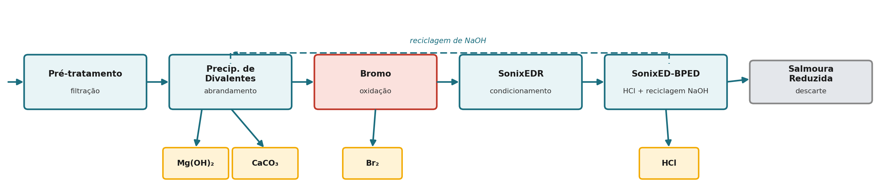

Engenharia, instalação e operação e manutenção locais: Treattec. Unidade costeira, litoral do Ceará.
A água bruta de alimentação é concentrada diretamente pelo estágio de eletrodiálise com atuação acústica SONIXED — nenhuma osmose reversa é utilizada nesta configuração. O SONIXED divide a alimentação em um fluxo de produto de baixa salinidade e um fluxo de rejeito concentrado, com fator de concentração volumétrica de projeto de ~1,8×.
O fluxo de rejeito passa então por um trem de recuperação seletiva em etapas, que isola os minerais de dureza divalentes, o bromo e um fluxo salino rico em monovalentes — este último convertido no próprio local em ácido clorídrico e hidróxido de sódio.

| Etapa | Função |
|---|---|
| Pré-tratamento | Filtração da alimentação bruta antes do concentrador SONIXED |
| Precipitação de Divalentes | Precipitação escalonada, controlada por pH e CO₂, de Mg(OH)₂ e depois CaCO₃ |
| Bromo (oxidação) | Recuperação oxidativa de Br₂ a partir da salmoura já isenta de divalentes |
| SonixEDR (condicionamento) | Concentração adicional do fluxo rico em monovalentes antes da separação salina |
| SonixED-BPED | Eletrodiálise com membrana bipolar, separando o NaCl em HCl e NaOH |
| Salmoura Reduzida | Fluxo depletado de minerais e monovalentes, destinado ao descarte |
Magnésio e cálcio são recuperados sequencialmente, e não co-precipitados, explorando a grande diferença no produto de solubilidade entre os dois sistemas hidróxido/carbonato:
O Mg(OH)₂ precipita primeiro à medida que o pH é elevado (o Mg(OH)₂ tem Ksp muito baixo), com dosagem de NaOH — fornecida em parte pelo loop de reciclagem de NaOH proveniente do estágio BPED a jusante, e não apenas por reagente novo.
Uma vez esgotado o magnésio, a dosagem controlada de CO₂ em um pH-alvo distinto precipita o cálcio remanescente como CaCO₃. Esta etapa é, na prática, uma etapa de carbonatação mineral (utilização de CO₂): o CO₂ é consumido estequiometricamente para fixar o Ca²⁺ como carbonato sólido, em vez de ser liberado.
Como as duas etapas de precipitação são controladas por pH e dosagem, e não simultâneas, os dois sólidos são recuperados como fluxos separados e de maior pureza, em vez de um único lodo misto de dureza — esta é a base para tratar o Mg(OH)₂ e o CaCO₃ como produtos distintos e valorizáveis separadamente, e não como resíduo.
As concentrações iônicas abaixo refletem a composição média típica da água do mar; as frações de recuperação são metas de projeto da extração baseada em SONIXED, ainda não medidas em campo em escala comercial.
| Espécie | Água do mar (mg/L) | Meta de recuperação | Produto |
|---|---|---|---|
| Mg²⁺ | 1.450 | 90% | Mg(OH)₂ |
| Ca²⁺ | 560 | 85% | CaCO₃ |
| Br⁻ | 68 | 70% | Br₂ |
| Na⁺ (monovalente) | 11.500 | 80% | NaCl → HCl + NaOH (via BPED) |
Valores por m³ de rejeito do SONIXED, escalonados para base anual, assumindo operação contínua com fluxo nominal de rejeito de ~15 m³/h (compatível com capacidade de alimentação de ~25–30 m³/h, considerando o fator de concentração de ~1,8× acima). Resultados do modelo interno de extração SONIXED, não rendimentos medidos em piloto.
| Produto | Conc. no rejeito | kg/m³ | t/ano | Observação |
|---|---|---|---|---|
| Mg(OH)₂ | 2.610 mg/L | 5,64 | ~710 | Meta primária de recuperação — dimensionado para offtake |
| CaCO₃ | 1.008 mg/L | 2,14 | ~270 | Menor valor unitário — subproduto / crédito de utilização de CO₂ |
| Br₂ | 122 mg/L | 0,086 | ~11 | Opcional — requer dosagem de oxidante |
| NaCl (→ alimentação BPED) | 20.700 mg/L | 42,1 | ~5.300 | Não comercializado como sal — convertido no local em HCl/NaOH |
O KCl e o Li₂CO₃ foram avaliados no mesmo modelo e excluídos deste caso-base: a recuperação de KCl é tecnicamente viável, porém marginal nessas concentrações, e o Li₂CO₃ não é viável — o teor de lítio da água do mar (~0,2 mg/L) é diluído demais para que este processo o concentre economicamente sem uma etapa dedicada e seletiva para lítio.
O fluxo rico em monovalentes que deixa as etapas de precipitação de divalentes e de bromo é condicionado pelo SonixEDR e alimentado ao estágio SonixED-BPED, onde a eletrodiálise com membrana bipolar separa o NaCl em HCl e NaOH. O NaOH é reciclado de volta à etapa de Precipitação de Divalentes como principal reagente de elevação de pH para a recuperação de Mg(OH)₂, reduzindo o consumo de cáustico externo; o HCl fica disponível no local para funções de regeneração ou como coproduto comercializável.
O consumo específico de energia para o caso de recuperação selecionado (Mg(OH)₂ + CaCO₃ + Br₂, fluxo monovalente para o BPED) é modelado em aproximadamente 23 kWh/m³ de rejeito do SONIXED processado. Este valor vem do mesmo modelo interno e ainda não foi validado em campo.
As frações de recuperação (90% / 85% / 70% / 80%) são metas de projeto — o desempenho real da precipitação seletiva depende da interferência de íons-traço e da precisão do controle de dosagem em escala.
O fator de concentração de 1,8× do SONIXED e o SEC de 23 kWh/m³ são resultados de modelo, não desempenho medido em stack.
A pureza dos produtos Mg(OH)₂ e CaCO₃ (necessária para precificá-los acima de subproduto de baixo grau) ainda não foi analisada de forma independente neste conjunto de dados.
Fale com a Treattec sobre tratamento de água e valorização de salmoura.